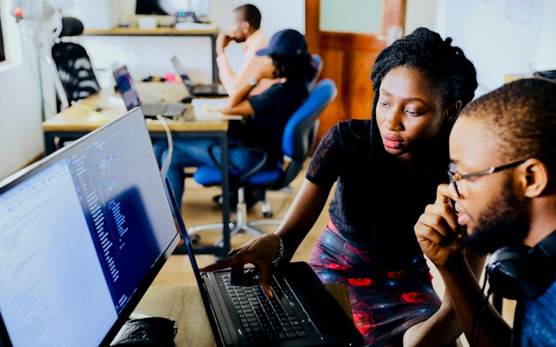
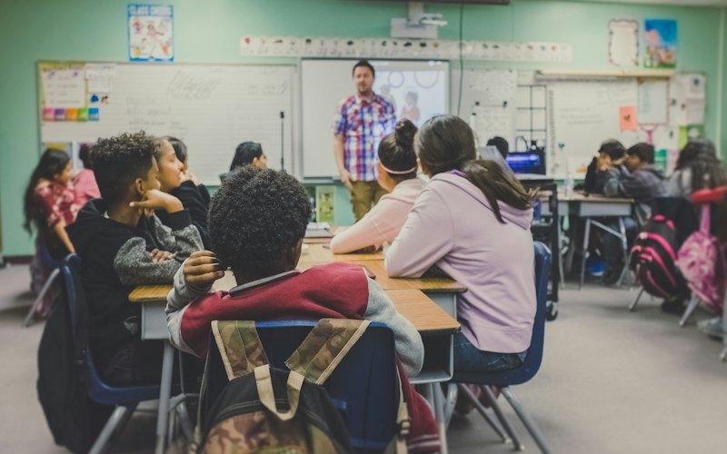
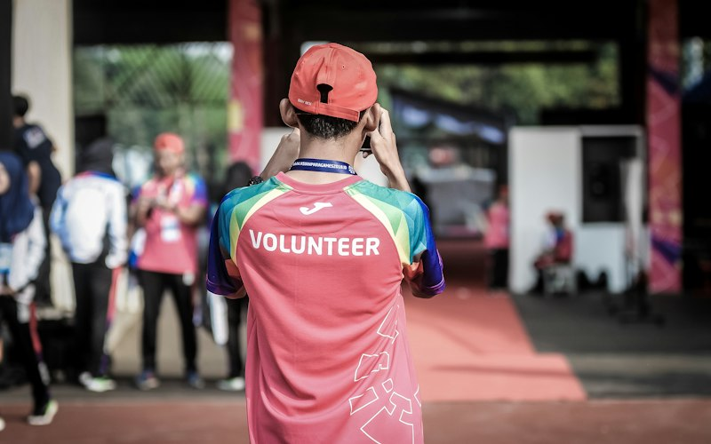
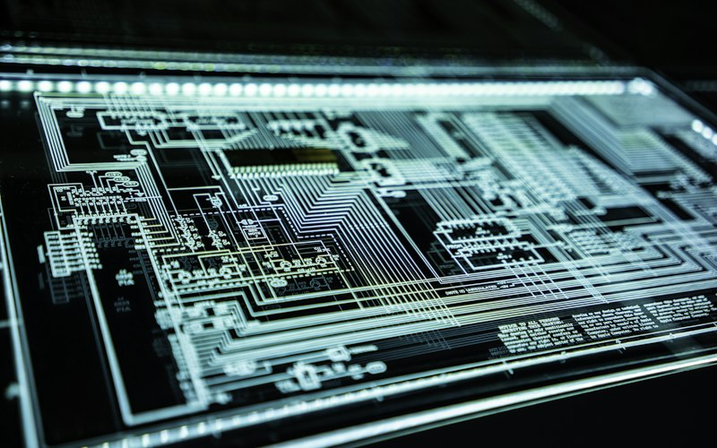

Tercer sectorSAAD: asesoría digital gratuita para entidades sociales
Acompañamiento para que las entidades sociales den el salto digital sin coste.
Iniciativas en España y en el resto del mundo para que la tecnología abra puertas en lugar de cerrarlas.
Andalucía, Madrid, Cataluña y Galicia: proyectos cercanos, diseñados con cada comunidad.

Tercer sectorAcompañamiento para que las entidades sociales den el salto digital sin coste.
 Formación
FormaciónFormación en Madrid para educadores que quieren incorporar la tecnología a su trabajo.

Infancia y juventudProgramación, robótica y creatividad en Madrid y Galicia durante el verano.

ComunidadUna nueva red que acompaña a las personas que más lo necesitan en su día a día digital.

CalidadGarantizamos la seguridad de la información de las personas y entidades con las que trabajamos.
Formación orientada a la inserción laboral, presencial y en nuestro Campus Virtual.
Red europea que impulsa la inclusión y las competencias digitales para todas las personas.
Nuevo proyecto Erasmus+ para compartir metodologías de inclusión digital con entidades europeas.
Cooperación con entidades de América Latina en educación y acción social.
Intercambios que permiten a jóvenes vivir experiencias de participación en otros países.